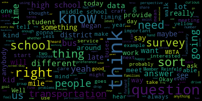

[Graham]: elect to do something different anyway. And I think that's an important question. The answer to what really is the, you know, what really is the perspective and opinion of those impacted is something that's sort of on my mind. And then I think along the way, we hear lots of questions about like, the policies around how far we will bus. I drive by the high school somewhat regularly at about the time kids are already supposed to be in class and there's still like an endless stream of cars dropping kids off. And I do wonder how anybody gets to school on time because the number of cars going in and out, you know, clearly dropping people off is pretty staggering. which suggests that we're not providing transportation in some capacity. So I think the goal is just for us to think about what kind of survey we could provide that would help us start to get some answers grounded in the people who use the services. to really think about what are the problems, whether they're solved by a new contract or they're more immediately solvable, and how do we have some facts to move forward with? So that was the goal of this whole effort to begin with. But I did see earlier today that the district launched a Smart Routes to School survey, and I was curious if anybody could tell us about that and what it's what the questions are and who gets the data and what the goals are because I think that does complicate anything we're going to do here like we can't. put out to transportation surveys in hot succession and expect that people are not going to be confused by that. So when we ultimately get to talking about what goes in the survey and timing, I think that'll be important. So I didn't know if anybody could tell us a little bit about what that survey is even all about that went out today.
[Edouard-Vincent]: Dr. Cushing, are you able to respond to member Graham's question? He has been involved with safe routes to school. So let me just try calling him to jump back on. Thank you.
[ZTAFqIlEOR4_SPEAKER_03]: And if he can't, my wife has been involved with this group, so I can speak to it. And I spoke with Ellery as well, but I'd love to hear where the district is coming from on this. But it is a three question survey. I can pull it up, actually.
[Graham]: Oh, OK. I literally just saw it as I was signing in and I was like, yeah, I
[ZTAFqIlEOR4_SPEAKER_03]: I had reached out to the Safe Routes to Schools people to say, hey, is there anything you'd want us to keep in mind? And they said, oh, actually, this thing that has been kind of chugging along slowly is set to launch tomorrow. So it was, yeah. So the The survey itself is run by Safe Routes to Schools, which is a statewide group that does local advocacy and assessments. And it is a very basic survey, right? So if you click on where you live, whoops, and then you answer questions about your child. How do you get to school? How do you get from school? And this is it. So it's not comprehensive. I know this group is interested in getting more data about what stops people from active transportation, walking, biking, rolling this. But this survey is just this assessment. I believe it goes to the state organization of Safe Routes to Schools. They do the data and provide a report. I have the report from the Roberts from 2018. It used to be done by school, and I think they're pretty excited. Hi, Kitty, about having a comprehensive approach from the district on this, but it's really focusing on alternative transportation.
[Graham]: Okay, that is super helpful. Thank you, Member Reinfeld. So I thought what we could do today is use the time that we have to start to brainstorm and think about, like, sort of the questions that we have that we would want to have vetted by this survey. And to the extent that we can, you know, craft any questions that we have. And then perhaps Megan and I can work offline to sort of flesh out a draft to bring back to this group at a future meeting. And so I have a literal blank piece of paper here that I'm happy to share and we can walk through and just do some brainstorming until it can sort of evolve into something a little bit more formalized, if that works for the group, yeah? Okay, I'm gonna share my screen. Okay, you all see my screen?
[Edouard-Vincent]: Yes.
[Graham]: Okay. Okay, so I think, you know, sort of one thing that we probably want to be clear about is our questions to answer via the survey. And then the other thing is, you know, what survey questions are we thinking we'll ask? My typing always goes downhill when I'm sharing my screen. Okay. So I would be happy to hear from any of you if you, I have some thoughts, but I will yield my thoughts to the group if anybody has anything they want to throw out there.
[Ruseau]: So I did just Google for some examples of transportation surveys for school districts. This one has 21 questions, which I am just reading right now. There are questions about the bell schedule, which is interesting to have as part of that survey. I can't see the answers because the dropdowns have presumably lots of options, but it is a survey that is closed, so they won't let you drop down and see what's behind there. You know, there's questions about the, you know, transportation experience, positives, surprising, that kind of stuff. I also put into the chat the safe routes to schools I believe this is a sample of what their actual report looks like. And it does have, as Member Reinfeld pointed out, it's very basic. You know, when people are using it is sort of what I'm getting at, getting is how do people get to school, percentages, days of the week, the morning and the afternoon. Interestingly, they have a thing about weather conditions, which is good. If we plan everything around, everybody bikes and the entire system falls apart because it isn't always biking weather, for instance, that could be a problem.
[ZTAFqIlEOR4_SPEAKER_03]: question. I think I'm right, though. Yes one meta question I have is whether we're looking to have an assessment and understand. The what are the obstacles to participating in district provided transportation or alternative methods versus what could the district do differently? That would shift your transportation behavior because those are kind of two different approaches to
[Graham]: good question. And I think the other thing on my mind is we need to, I think in terms of like how we get responses, we need to know like at baseline, each person who's answering the survey, how did they get to school today? And does that meet their needs? And if it doesn't, what is it that they would identify as the thing that would meet their needs? So as an example, my ninth grader walks to school and that meets my needs because we live less than a half a mile from the high school. I might feel differently if my ninth grader walked to school, but we live two miles from the high school, which technically means she's supposed to walk to school. And I might say in that case, like I, my kid walks to school, but it does not meet my needs. And I would like the district to provide transportation so that she doesn't have to walk two miles to school. Right. So I think like understanding sort of how, how it works today for the respondents and whether that meets their needs or not, and if it doesn't, like what would, I think is an important way to think about how we want to drive out these questions. And I think it maybe is both of those things, member Reinfeld, like maybe it is like, is it that I need the district to do something different or I need to do something different, like what, you know, is it that, there's some barrier that's not allowing me to do the thing that I want to do, or is it simply like, I need a yellow bus to come pick up my kid in order for me to say that this meets my needs? And I think we're going to get a whole bunch of different answers. But when it relates to students, the high school students in particular, I think one question I would want to dial in on is, if they are using a bus to get to school today, what kind of bus are they using? And like, does that meet their needs? And if it doesn't, what would? Which might help us understand like the MBTA question around like, what are the preferences of the students riding and their families for that matter? So that we can respond accordingly, you know, and consider like what that means for us. I'm going to share this document.
[Ruseau]: So is this being created in your personal Gmail or in school? Okay, just check. Nope. I hate that. I also, I think that As you were just speaking, I was wondering about whether or not, you know, looking at the survey, Safe Routes to School survey, this appears to be a survey to parents. And I think that's an important group to ask. We have questions for parents, caregivers, but I feel like there needs to be questions to the users, the students, as well, especially for the high school. And I feel like they're very different kinds of questions. Oh, it is. Okay. And high school students. Thank you, Tom. Good. You know, looking at their data, though, I'm frankly nervous. Like they have Each day, the morning and the afternoon, transportation, the data broken up by each of those, which is 10 different things, which of course makes sense to want that. It's a lot of data and I'm hopeful we don't have to replicate anything that we have coming out of Safe Routes to School survey. Hopefully we can scratch it off the list instead of asking those questions again.
[Graham]: Well, I'm not convinced. Well, first of all, I'm not convinced that we would even have access to that data in a raw form, right? Like this is, I mean, I suppose we could ask for it, but more than likely we're going to get a report, right? That provides, I think we're going to have to ask some, maybe some questions more than, you know, again, because I think we would want to be able to attribute them within our own data set, right? And Megan, I'm so glad that you're able to join us. I know that you and I have talked about this a few times like over the course of time, but I'm curious, you know, based on what your office feels in terms of questions about transportation, like what's on your mind as we think about like what people, what information we need to get from people? Oh, you can't unmute. Hold on.
[CrEp94TD4IM_SPEAKER_18]: Oh, there we go. Yeah, yeah. Okay, there we go. Um, so I mean we certainly So I am right in the middle of it because I know what can be done with the resources as they exist and then what the policies say. So if we were to change some of the policies to meet some of the unmet demands of the families, we wouldn't be able to meet those policy demands now because we don't have the infrastructure for it. So this bus driver shortage thing is so real. However, I'm with you, Jenny, that like, the hardest part was we cracked down a little bit on the policy distances. And we got rid of some bus stops that were, especially at the elementary school level, we got rid of some bus stops that were inside the one mile mark. So we weren't obligated by policy to bus those students. And then the families just, you know, they got savvy, and they just walked up to the next bus stop, and it was like, 30 kids. And so, you know, I was preparing myself to crack down on those 30 kids, but I was thinking specifically about which families they were, what neighborhood they come from, and what the sort of PR fallout of having such a huge group all at once would be. So, I mean, I know that that's a lot of kind of anecdotal parts of the details, but it's an important part for this group to be thinking about. But I think that what I would see a lot of is to rethink those, policies because they are too far. And we as a district, and I'm committed to doing this this summer, need to also commit to kind of rebuilding community to talk to them about how to not be super scared of walking to school. So luckily, the new manager at Eastern Bus and I, we have just a sort of plan in place for this summer that we're going to, she's going to, we're going to drive all the routes together and she's going to make them more efficient and we're going to make them to policy so that we're not, you know, taking too many kids that are not eligible. And I'm going to reach out and talk to families in the in the neighborhoods that have historically been kind of like getting on the bus, but they're not eligible to and offer meetups. I'm going to work with the Met Family Network where it's appropriate to offer meetups to be like, let's all walk to school together. And this is where I'd like to, you know, work with Ellery. Ellery reached out to me and I haven't had a chance to get back to her about Safe Routes to School, to find out what resources we have to do this. It's sort of a teaching people how to walk to school, which sounds funny that we need to be so explicit about it, but we do. And, you know, sort of introducing people like this is who you would walk with, and it's okay, you can trust your kids with these people to walk to school. I don't know. Those are a lot of anecdotal stories, but that's what I'm constantly working between. The push of families saying, it's too far for my kids to walk, so I need a seat on the bus. And the bus is all being overcrowded because there's a driver shortage. So even students that are eligible, there aren't enough seats, and so the bus has become unsafe. And the pushback that I want to give to say, we need to build some independence in the kids and start walking with them. So that's where we are with that. But as far as at the high school level, adding yellow buses at the high school, I've just done informal surveys with those students. I would love to see a formal survey with actual student voice to find out how they feel about that. Because I think that if we went to the expense of adding the yellow buses for all of the high school students that are eligible for them, we would have a lot of empty buses. Hi, Lucy, I'm sorry, I'm on a Zoom call. Um, we would have a lot of yellow buses that were, you know, barely full, and it would be very expensive. In fact, I did the math once and said that it would be cheaper for us to give to pay for all of the MBTA M cards for every student in the high school than it would be to have the 14 required yellow buses to take bus every kid. Now, Again, I don't know how many of the kids would use those so that would be a waste. The other part about this is what a waste of money it feels like because when we were paying for MBTA buses for students, we could tell that a lot of them weren't even using them. So we were spending $30 on a month for students for the just in case one day a week that they might use it but otherwise they were getting a ride from their friends or they're driving themselves or they were getting it from their parents. So that didn't, that was just painful to watch all that money kind of fly out the window. So I think that the high school survey would be very valuable, very interesting to see. And their parents, you know, because we just got an email today from a parent saying that she's very uncomfortable with her student driving in cars with friends and that he does take the yellow bus. And so I think the parent's voice needs to be in that survey as well.
[Graham]: Yeah. And then Megan, I know the, the questions or the concerns probably are different at different levels, right? Like at elementary, I would expect to see lots of different kinds of feedback than at middle school and at high school. So I'm curious if there are other questions, like what else do we want to know about in terms of our bus ridership, I guess I'll say, or transportation that we haven't talked about so far. And one thing that comes to mind is like some explicit questions about late busing. And so I know, you know, over the years, that's even been a question at the elementary school level, like there have been a handful of instances where we've provided yellow late buses to programs at the elementary school, although it always struck me as like a one-off thing that was sort of happening.
[CrEp94TD4IM_SPEAKER_18]: Yeah, the only one I know about that was when we had ESSER funding and we were doing sort of tutoring, like ESSER, the catch-up catch up tutoring for elementary school. And so we provided transportation for that.
[Graham]: Right, right. And so, but I think late busing in general is a question that we should probably try to get the answer to. I know I've heard like, and I sort of wondered about this for forever. My middle schooler does afterschool sports. They're very scheduled. They're totally predictable. They start after the late bus leaves the middle school. Like, it feels a little bit insane that we would have a school sponsored activity and we would intentionally started after transportation options exist for the kids. So that's, you know, I think when I think of the late bus, I think of that. Like my kids, because when they're in middle school, they ride past the high school. They report about overcrowding on days where there's middle school athletes going from the middle school to the high school. I hear the same thing about the library, which is a hot spot for middle school dating, which always makes me giggle. So there's like sort of hot spots around the city that, you know, sort of flare up at different times of the day that I think are worth sort of pursuing as well. And this, I see somebody from, is that Peter? Is that you with your hand in the air?
[XR045-Loi0M_SPEAKER_21]: It is. I was thinking that one question might be specifically around what you were saying, the late bus tier. Some districts do have two tiers of late buses, now realizing that's an additional cost, but they have a say like a 3.30 late bus and then maybe a 6.30 or a 6 o'clock late bus once activities after school, things of that nature are done. So that might be an additional question to ask. I think another thing that needs to be very clearly articulated is that the survey needs to be filled out for each individual student, not each individual family, especially if they have multiple at various schools. I don't know if that was stated. I also just spoke with our rep from Safe Routes to School. She is going to ask if we can't have access to the raw data. It is normally a report shared with the principal, but she will ask if we can have access to the raw data.
[Ruseau]: be great.
[ZTAFqIlEOR4_SPEAKER_03]: Member Reinfeld? So I will note that Member Ruseau and several other members sat in on the Student Advisory Committee or Student Advisory Council meeting last week, and they raised some challenges with the busing. Some of it was around how it is implemented at the schools in terms of stopping points and lines and crowding, and some of it was around timing. Was this? The high school high school.
[CrEp94TD4IM_SPEAKER_18]: Okay.
[ZTAFqIlEOR4_SPEAKER_03]: Yeah, so I would echo what member Ruseau said earlier that getting student feedback certainly at the high school level and I think the middle school level as well I think my question is, to what extent is this survey about the quality of the experiences of the services being provided versus the. the, the, which services should be provided and are going to be used because, you know, the things that we keep hearing about, about overcrowding on the buses or lack of bus monitor or vaping on the middle school bus, those sorts of questions, as you say, distinguishing fact from fiction, how prevalent are these issues? I saw Megan's hand go up.
[CrEp94TD4IM_SPEAKER_18]: So yeah, just because my, my only fear about asking for an evaluation of the, you know, the quality of the service would just be opening up a ramp. cave you know so that's that would be my worry and and and especially because we know why we have a explanation for why some of the things are not working well it's it's partly this driver shortage um you know and so if we didn't know and everything was working the way it was we were fully staffed everything was great and then people told us like no it's not exactly what we want i think that would be more valuable but like right now to say that the the buses are overcrowded or the bus drivers are grumpy when we're in a position where we can't really address, we can't afford to fire anybody.
[ZTAFqIlEOR4_SPEAKER_03]: I mean- I think my question there is to, is it, can we phrase those things in terms of obstacles? Are people not putting their kids on the bus because of X, Y, or Z reasons? So I think that phrasing is useful.
[Graham]: Member Ruseau?
[Ruseau]: Yes, I think, I certainly understand Megan's concern. Nobody really wants a report that says, my God, everything's terrible. Especially when we, first of all, I'm not saying everything is terrible, but when we know there are problems and we know what they are and we know the solution, and right now that is not solvable. I do think there's value, however, in understanding it because it provides us with a priority list. You know, when we decide how to spend money, which we don't have enough of, I think knowing, you know, if 92% of all students who ride our transportation think it's the worst thing that they've ever experienced in their lives, that's different than 20% complaining. And it'll help us understand in the context of other services in the district that we don't provide or can't provide might be cutting or whatever else. And I think one thing about the survey in general that worries me is, like other surveys we have done, such as our superintendent search, which is the one that is most prevalent in my mind, because I did the survey, not alone, but is we really struggle with outreach is an understatement. The people that responded to the superintendent's search to say they were not a slice of Medford, a representative slice of Medford is the biggest understatement I could possibly ever say. And so, I mean, I appreciated all of their feedback and we got a very good number. but like the number one income level for people that responded was over $250,000. And that is not the average of Medford. So I worry about how we can get a meaningful set of responses so that we are, first of all, not skewing the data so much into just people with a grudge, which is always a concern. But I also, you know, the late school bus stuff that was just brought up, you know, I don't know how many times I can tell my story, but some of the faces on the screen changed. So, but, you know, I lived in a rural district. I was the furthest student from the school, the furthest student. And to say it was well over an hour each way every day was no exaggeration. And there were no late buses. at all, and I participated in exactly zero after-school activities my entire 7 through 12 education, because it was a 7 through 12 high school. So I think, you know, certainly my strong preference is that we prioritize stuff like that, because now, granted, this is not rural New Hampshire with 13 towns going to one school far, far away. It is definitely a different situation, and there might be alternatives. But I'm just very sensitive to our students not participating in activities because transportation is the reason they can't. And how we get at those students and get those answers, I don't know. But I think that should definitely be a priority because they're the people who are not necessarily getting served at all.
[ZTAFqIlEOR4_SPEAKER_03]: May I share a map of our school radiuses? Sure. All right. So these are our schools. Oh, my toolbar's in the way. There it goes. Right. And so this is within half a mile. And then the lighter shading is one mile. And then these dotted lines are the three miles. So, particularly when we're looking right Fulton Heights I know we do a bus at the high school here, but we've also got a lot of outside the radius for the high school and a lot of these neighborhoods. are a particular demographic and so there's a there's a huge equity issue and understanding I love Megan's idea of reaching out specifically to families right the elementary schools have this have these radii but even some of that is not being captured in this. And then there's also, I think, the stigma issue that needs to be talked about, right? Riding a bus, the kids who are able to park. Is parking free for high school students? Yes. OK, but that, of course, requires owning a car or having access to a car. And so I don't know to what extent stigma is informing. You know, we can ask about how would your behavior change if we made these changes? But some of it is not. Some of it is really rooted in, you know what, even if you give me these buses, I wouldn't take them. or even if I knew how to walk to school, I wouldn't, or my family, my parent drives past the school every day, and so they drop me off, and I'm never gonna switch to something else. So what we're hoping to accomplish, is there an ideal situation that we want to achieve here, or is it just, you know,
[Graham]: Yeah, I think in my mind, if we can craft the questions correctly, like we can ask people about what they do today and is it. Is it their preference? And if it's not, why not? So that we can acknowledge that not everybody has the same, my mom drives by the high school every day and she's gonna drop me off and that's my preferred way to get there, right? I'm fine with that and if you sent a yellow bus to my driveway, I wouldn't take it because I'm gonna get in my mom's car and she's gonna drop me off, right? Versus like, I don't have a parent that can drop me off. And so I walk a mile to school every day. Like, I think those are different things. And I think individually, like, right, it's impossible to make everybody happy, but I think if you can get enough response to the survey, so back to outreach, if you can get enough response to the survey, you can see trend and you can see like sort of global preferences, right? and that data might be useful in order for us to be able to say. you know what, like the high school kids have no issues at all with the MBTA buses bringing them to and from school. What they care about is that they're late. For example, like maybe they care, maybe they don't care what the bus looks like, but they care that they can get to school on time, right? And so I'm fine with the, I'm fine with the MBTA, but it makes me late every day.
[ZTAFqIlEOR4_SPEAKER_03]: And that- And that was, that was actually their complaint that there are two buses and they're crowded.
[Graham]: Yeah. So I think there's like a lot of different like, you know, when you talk about like what works for people, like what works for people works for them and not necessarily for anybody else. But I mean, there is a finite number of versions of what exists versus what we would like it to be. And I think we could see if we can get enough participation, like I think we could see something that informs like, are we trying to expand the number of buses we have and by how many, for example, or by none? Like maybe the survey says like none is the right answer. I don't know. Peter, did you have your hand in the air?
[XR045-Loi0M_SPEAKER_21]: Yeah, I do. Quick question. Member Reinfeld, what year, I wasn't able to see, what year was that data from on those radii?
[U1EIl_L-LWc_SPEAKER_00]: That is a great question. Let me find it again.
[XR045-Loi0M_SPEAKER_21]: And the only reason I ask is we are actually working with the city and safe routes to update those. So I can provide as soon as we have it, I can provide them. We've sent the addresses in with no identifying information to do that. So we are working on that right now. The other thing too, just to consider when it comes to parking is, there may be a project, there will be a project in the next few years that may significantly limit High school parking, and so it's just something as we're considering transportation moving forward, you know, the, the effects of reduced student parking, potentially in the future.
[Ruseau]: I was actually going to bring that up. Peter in a slightly different way, but, you know, aside from the. the probable need to have less parking available, assuming that the high school is done where it is now. There's also the need to understand, if we are building a whole new high school, how much parking lot are we building? I don't suspect the MSBA actually will have an answer for that in some formula. But they may have a formula for minimums or something. we probably have more than is normal just because of the lot we have right now. So understanding if we end up having to have less parking, how much less can we have before it becomes a real problem? Also the parking is for me is about the, the ins and outs of the high school, getting your kid in and out for parents and for buses and for students that are driving. The current setup is, of course, everybody can agree is terrible. And whether or how much we think about and care about that in a new design, it kind of matters. Like if we were to change the pattern and make it work beautifully, would we suddenly have far more people driving their kids to school? Would we have far more students trying to park? You know, those, that kind of a change, if it was not so painful, I think there might be more people who are like, I'll just drop you off at school. Because I know that they're like on Wildwood across from the high school, like people are lined up there early. I'm sometimes one of them. And we won't even go up to the high school because it's so awful. And so, yeah, no understanding what people might want to do. Like I feel like there is two things here, the evaluation of what they have, but then there's sort of the blue sky If let's pretend we were building a Medford High from scratch and we didn't have students and we were just creating a high school from the beginning, what would people want? Which isn't necessarily what they would do, but I don't feel like we know that at all.
[Graham]: I think the other thing that I hear about often well and usually like at the beginning of the year is that there are times where our reliance on MBTA buses is like misaligned with what service they're going to provide right so like when we. When we start school in August right like. It's like, oh, we don't have service those days. Sorry, guys, get yourselves to school some other way. So I think the other sort of thing I'm interested, I think my other interest in doing the survey is to be able to present like a really full picture of transportation in the district and you know, like dispel the fiction, right, wherever it exists and describe like what we do and why. So for example, like I'm under the impression, I could be totally wrong, that we don't have, we don't have late start snow days because the MBTA buses aren't gonna get our kids to school if we put a two hour delay on. I could be completely wrong about that. I have no idea. That's what I've always heard. That's what I tell people if they ask me, but we also like I think need to be able to. sort of like lay out like, here's what we do transportation-wise and why, so that we own our story. So like Megan, my sort of immediate reaction to you saying like, we know what the problems are, was my thought was like, I don't think anybody knows that you know what the problems are. Like, I don't think the community thinks that at all. Like, I don't think they think we have a handle on it at all. And that is like, you know, Medford dies hard around being disorganized. So I think if we have answers to these questions, this is also an opportunity for us to say, here's what the data tells us about this survey. And like, here's like a level set of what we do and why and like what we're already working on. So like, I think you're working on lots of great things. I just don't think anybody knows about it. And it's always a timing issue, right? Like, when do you tell people that you're working on something? And I think we have a lot of history around, like, misfiring on that timing question, you know, in all kinds of ways. But this could be an opportunity for us to say, like, as we go forward, here's what we're looking at. And we have a set of recommendations based on the data and our current practice. And the recommendation is we're going to change the you know, the one mile radius to one and a half miles, or we're going to change the two mile radius to one mile, like whatever those things are that we're going to decide out of this, like this is an opportunity for us to strategically say, like, this is the need, this is what we have, and this is where, this is like, this is what we think we should do over the next X years, and that's how we're going to go forward with a plan around, you know, all things transportation. I think the other question I have is like how do we wrap in all the transportation like the individualized transportation that the district provides because I think that's an important aspect to all of this is to make sure we understand that piece of it too. you know, what the set of questions are around that individualized transportation, whether it's to schools within our district or schools that are out of district, like what, you know, we have to sort of craft some questions about that as well for the impacted individuals who, who take that kind of transportation from the district. Megan, did you have a question or a hand up?
[CrEp94TD4IM_SPEAKER_18]: Oh, yeah. Okay, there we go. Thanks. Um, no, I was, uh, let me go back and think if I can remember it. Um, yeah, I, I would love to have the sort of place to sort of, I don't know if it's airing dirty laundry, but sort of give our reasons our stories. And, um, but like, Because nobody likes to hear the answer of, well, there's a driver shortage. It's unbelievable. People are like, so what? That's your problem. Make it happen. Tell the company that they've got to figure it out. And I'm like, the company is working with us so closely. And she calls me every time she's got a new person that they're training. And she calls me every time that there's somebody that they had to let go for, like, safety reasons that we all support. But for strategic planning, I agree with you. And we should be planning it, not like assuming it's going to get better. And I do like the ideas of the survey. I want to walk back my thoughts on not evaluating it, because I do hear what you're saying. Do you guys need me to close this door? Is it too noisy? No, we can't hear it at all. OK, good. to walk back because I do hear, see the value in knowing whether the reason people aren't using it is because they've heard of these bad things about it, because that would be important, or they've heard, or there's a discomfort about it. I think that that would be valuable information to know that more people would be using it. So I just wanted to say that part too. There was something else, but I, I'm sorry, I got distracted by the- No, it's okay. Thank you. Bye, Jerry.
[Ruseau]: You know, yesterday, I believe, Framingham Public Schools voted to take all transportation in-house. And because of, apparently they need 77 drivers, but they have 54, which to say that creates problems, I just can't even fathom. How does anybody even get to school at all? And now that Jerry's not on the call, I'm kidding. I mean, I would have said it if he was on the call still. But, you know, when we talk about driver shortages, we really are also not talking about driver shortages. There are enough human beings to drive buses and enough human beings that would be willing to drive buses, but not for the wages that bus companies pay. But when I think about what they're doing over in Framingham, these are probably going to be a unionized group. They're going to have benefits and retirement and they're going to get paid a boatload more than any bus company was ever going to pay them. And I'll bet they won't have as much trouble finding any bus drivers. So, you know, I realize this particular fiscal year is probably not the year to have that conversation, but the bus driver shortage is not a real thing. It is a made up thing because we refuse to pay people a reasonable wage. We have a bus driver shortage when McDonald's has to shut down because they can't get workers. But they don't shut down. So there are workers. And I'm not trying to, this is not an attack on you, Megan, or anything. I understand that's how this is talked about. But I think it's just really important to talk about it as it really is. We somehow want people, it's the same with the after school conversation. there are people who could work those jobs if we were willing to actually provide the benefits and retirement and enough pay. That's a reality. I mean, come on, we all know that. So, Framinghams doing this, it'll be very interesting to see how it works. And I realize financially, they're a very different district. I think the Student Opportunity Act has been kind to them. And so they may well, in fact, be flushed with cash to be able to do something like this that we couldn't do right now. The other thing though is, you know, I signed the warrants and I see what we pay to transport our students out of district. We pay per student more than we pay assistant superintendents. Like $6,000, $8,000 per student to go to school 20 days a month. So, and actually, I don't know if that works out to being what I have to pretend to make, assistance to pretend to make. But my point is just that's far more than we would ever pay a unionized retirement eligible and benefits eligible person to do that work, far more. And so, you know, I get that there's not a lot of time, a lot of energy and it takes a lot of energy and money to talk about getting ahead of it. It's like you're always a day behind on this kind of thing. Oh, we have a student we gotta transport. Well, you're not gonna like, okay, let's post a job for a new person to come and become our driver. Like no, the student has to be transported tomorrow morning, starting tomorrow. And so how do we get ahead of that? Because I don't, know the exact numbers but we spend a shocking amount of money on out-of-district transportation that and there is just I mean without a spreadsheet in front of me there's like no way we cannot do that for less if we just hire people ourselves take the hit put them in the you know pension and salary and all that other stuff there's just no way that it's cheaper and it also is a huge amount of effort for our staff to be on the constant treadmill of trying to find a new person to, you know, find a company that's willing to transport a student. Some of that stuff doesn't make a lot of sense to me. And it's, some of this is, this isn't really about the survey, though, I don't think.
[Graham]: Because a lot of this- I think it's about sort of what do you do with the survey afterwards, right?
[Ruseau]: Which is okay. Right. I think that's fine. Yeah, I think that's a good point. It's like, you know, we're going to get data from students, we're going to get data from parents, but we already have a lot of data of our own that is very relevant to this. And I appreciate that electrification of fleet was just put there, because then I don't have to say it.
[Graham]: Did the students at the Student Advisory Council meeting have other transportation related things to talk about?
[ZTAFqIlEOR4_SPEAKER_03]: Yeah, so they raised five concerns, and I just need to find that tab that has it. So there are five concerns. Where did it go? Wait, nope, that's your document. This one's my document. All right. Was. Oh.
[Ruseau]: I have it right here.
[ZTAFqIlEOR4_SPEAKER_03]: Yeah, it was the student safety in the bus lines, the setting designated arrival and departure position positions to reduce crowding more buses for North Medford and other underserved areas. five and 10 minutes, and it wasn't consistent as to when the arrival time was, and it wasn't time to accommodate people staying late, so that's your late bus question. And then the 95, either comes very early, very late, the early bus is very crowded, the late bus doesn't get people to their jobs on time. Member Ruseau, did I miss anything?
[Ruseau]: You did not.
[Graham]: Okay, so I think we have a lot of Well, I think we have a lot of questions to answer in the context of the survey.
[ZTAFqIlEOR4_SPEAKER_03]: Well, I think a potential setup is just the baseline. What do you do now? What would you like to do? Or do we have questions about getting fewer people taking buses, more bike pool, more walk pools? But what do you do now? What would you do if the options were there for you? And what are the obstacles to getting to those ideals, whether it's walking, biking, buses, carpools, parking? I think that is how this is shaking out for me in assessing what you do. What would you anticipate doing? And I want to recognize Megan's point that there's some education around that. I think we could absolutely aim to have fewer cars in the school drop-offs and pickup lines. That's going to be some education. There's going to be some resistance in the community. But understanding what the barriers are for walking, biking, carpools, busing. is important, so where you're going, and that's specifically what the obstacles are, or as I asked in the beginning of the call, what could we do to facilitate your ideal situation? But I think obstacles is probably the way to go on that. That's what people are experiencing, is they're saying, oh, I'm not doing this because X, Y, or Z. Okay.
[Ruseau]: Member Ruseau? We also did hear, actually, I didn't write it in my notes, but I remember it now from the meeting, Students, I don't know how many, but some students are not biking to school because the city made the decision to not do the safe. Protected bike lanes. Thank you, protected bike lanes. So that was a decision the city made to allow for some parking spots. And the consequences are that there are more people getting other ways. I don't sense that the people who would have been biking to school are instead getting on the bus. They probably have a parent dropping them off. And so when the city makes decisions like that, there are consequences. And I think that we have to remember that, again, getting back to the project That is the big project that's happening. There are intersections between the city's decisions and our goals, because I think having many kids biking to school would be great. I frankly don't want to have many kids biking to school if we once a year have to go to a funeral. That's the blunt reality of not having protected lanes. I wouldn't let my kids ride a bike to school.
[ZTAFqIlEOR4_SPEAKER_03]: For whatever it's worth, the city, I spoke to Todd Blake, city engineer, and they're saying they're in the process of mapping the school addresses of students who take the bus and kind of looking at which roads are getting the traffic and what kind of shape they're in. So there's some coordination with the city once we have these results as well. But they're interested in understanding that. especially since I will note that a lot of these neighborhoods have changed since I imagine the last time we did any kind of transportation assessment.
[Graham]: Right, yeah. We only have a few minutes left and I wanna be mindful of the time. I think this was like a really, really good discussion and Megan and I can take some work on to craft some questions and things like that. But I think the other question, to your point about outreach, I think we do need to think about, How do we get participation? I think we certainly. you know, we could think about like the timing of the survey and when it goes out. Like, are we interested in this going out like in September when we can like send it with like all the other paperwork that goes home and ask people to do it? Is that a terrible time of year? So really interested in like what the right timing of this is that would allow us to collect good data and still position us to use the data to inform any sort of RFP we need to do for our yellow bus service next year. But also think about like, what are the mechanisms where people are the most like, where we are the most likely to be able to convince people to do this? And how do we, you know, how do we sort of capitalize on high participation kinds of like, moments to like get people to engage. I think students like we have some we have options like you know using their advisory blocks and we can even have like a drawing of some kind right like we could do something that incentives people to reply from a student perspective. I think that's less less what's the right word less motivating maybe to parents who are like, I get 100 emails a day, I'm not going to take the time to do this right for a $5 gift card. But, you know, are there other reasons why I think there's a swath of families that will be highly motivated to do this, but I am equally concerned that we want to hear maybe more from the families who don't fill it out, or at least as much. So how do we create a way to get to them too?
[Ruseau]: Member Ruseau? Thank you. You know, when I was looking at the state schools survey results, you know, while they have this like morning, afternoon, a beach day thing, which I think is great, and you see some fascinating variability, I kind of, I'm struck that there's, and believe me, nobody wants to put out a survey with 350 questions, but I am struck by the fact that there seems to be no recognition that what you do in January versus what you do in May and September, if you're a hardcore biker, you may be like, all right, we have two feet of snow this entire February. every Monday, and maybe I won't bike. There's no seasonality, that's the word. And I'm hoping that Safe Schools is always like, this is the date. Otherwise, that data seems like that would be a little questionable. But it seems important also, because if we put the survey out in September, it's beautiful out. People who want to bike are biking. We may get a false sense of how much traffic there's going to be if we did some change, how much actual use of busing is there going to be. Yeah, I just feel like that seasonality stuff. And it isn't just seasonality. I mean, it's weather. I would put a slash weather on that, because I mean, I'm assuming that when the oyster comes through, there might be fewer people biking, possibly. Erica, remember Ryfeld, I know. Those things don't put her off, but for the less hearty of us.
[Graham]: Yeah. OK. It's 531, so we'll wrap this up here. If there is anything else that you all are thinking about, just go ahead and shoot me a note. And then Megan, I will connect with you, and we can find some time to. Um. Get through the next steps here and. Um, then once we have that, I will be back in touch to schedule another meeting for us to review because the next the thing after that, um. Will be to bring this to the full committee, which I think we said we would do by June so.
[Ruseau]: Motion to adjourn.
[ZTAFqIlEOR4_SPEAKER_03]: I'm noting Megan's comment in the chat here about asking families to sign up for the bus in May this year. Does that mean there's content you'd like to have ready with that sign up to say, you're not asking for a preliminary survey response or we shouldn't try to push things to meet that? Okay. Because if this is the moment when everyone's ready to talk about their transportation needs, I don't want to miss an opportunity.
[CrEp94TD4IM_SPEAKER_18]: Mm-hmm. No, I don't think that we should rush it. I think that this is, especially because we're talking about the end of next year being when our contract is up, I think we should be thoughtful about this survey and take time and not try and squeeze it into this May. I'm just asking for the signups in May so that we can better get a handle on who's signing up that's not eligible and if there's any rerouting that we need to do and notifying families ahead with plenty of time. It's just to buy myself more time.
[Graham]: I think that makes a lot of sense.
[CrEp94TD4IM_SPEAKER_18]: Yeah, I think rushing the survey would be too much, but if we happen to have it ready to go, we might give it at the same time, saying nothing's changing yet, but we're just, you know, everything's in place for next year with some, you know, we reserved the right to make a couple of changes, but we just wanted to ask this survey for strategic planning for the future. That's what I would recommend.
[ZTAFqIlEOR4_SPEAKER_03]: Member Graham, do you know if this kind of assessment for a new high school, would this be a separate effort to understand the needs there?
[Graham]: Good question. I think it can be, but I think if there's data that we can like use and leverage, we can certainly provide that to, it would really be to the folks doing the feasibility study. So I think they would be interested in like sizing sort of what those needs are from a feasibility perspective. So I think if we have input that we can provide them, that will be useful, but I assume that they also will have their own ways that they recommend sort of getting answers to those questions, so.
[ZTAFqIlEOR4_SPEAKER_03]: Because I know building and grounds are separate, separate entities for people.
[Graham]: Yeah, yeah, yeah. So yeah, I think probably both is the short answer. Thanks. Okay. I heard a motion to adjourn by Member Ruseau. Oh, I can second that. Seconded by Member Reinfeld. So I'll do a roll call. Member Reinfeld? Yes. Member Ruseau?
[Ruseau]: Yes.
[Graham]: Member Graham, yes. Three in the affirmative, zero in the negative. The meeting is adjourned.
[U1EIl_L-LWc_SPEAKER_00]: Thank you, everyone. Good night, everyone.
|
total time: 20.61 minutes total words: 3271  |
total time: 0.26 minutes total words: 34 |
total time: 17.59 minutes total words: 2540 |
|
{kind=link}
{kind=link}
{kind=link}